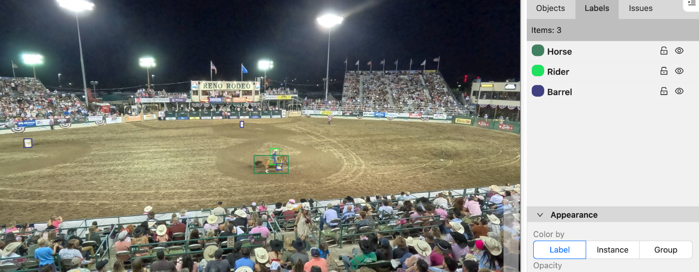
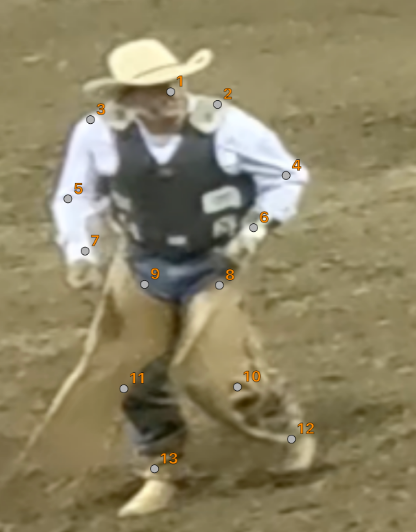
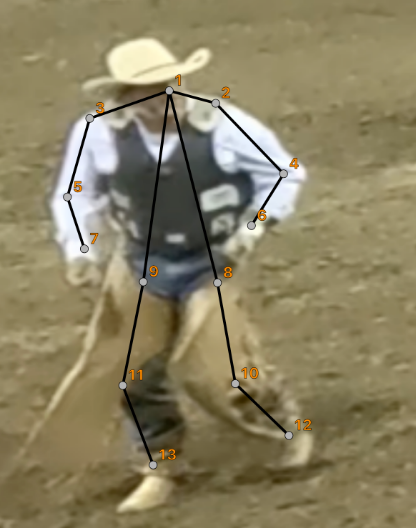
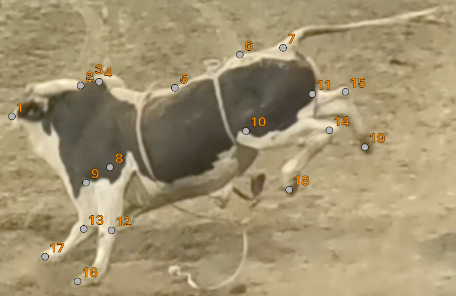
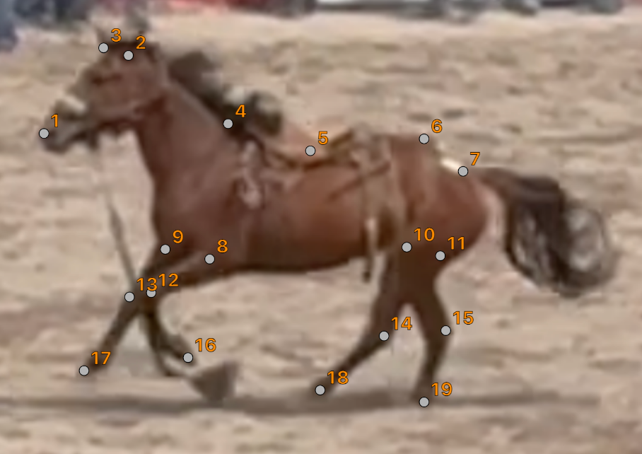
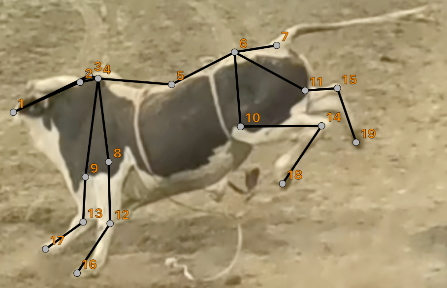
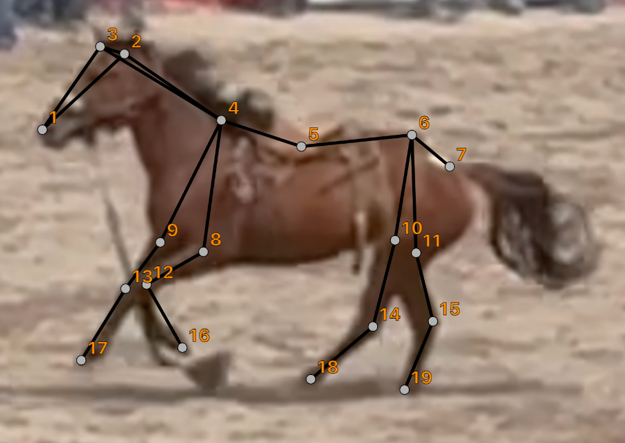
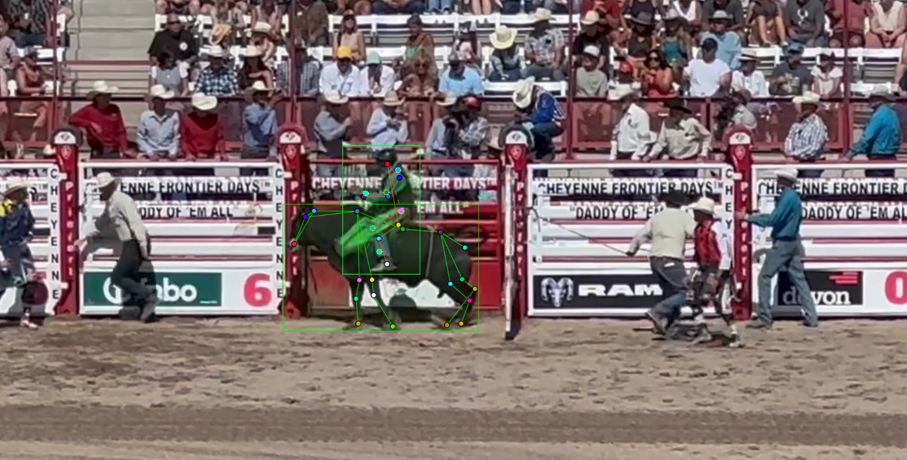
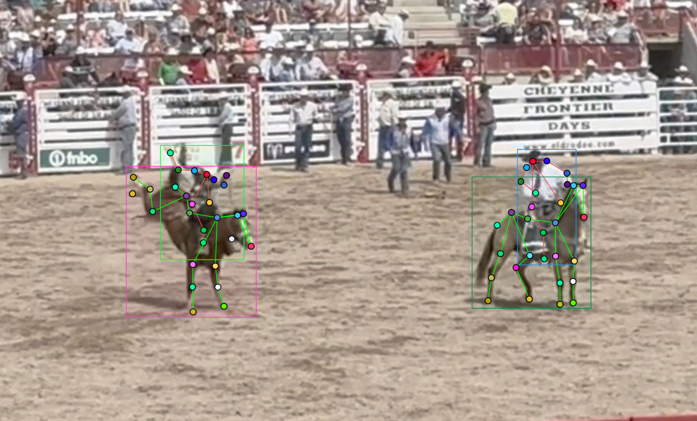

This guide covers Barrel Racing (bounding boxes only) and Bull/Bareback/Saddle Bronc Riding (bounding boxes and keypoints) in COCO JSON format. Follow these for high-quality, consistent annotations.









In this project I applied structured QA workflows to evaluate both images and videos. Focus remained on instruction accuracy, visual quality, and usability.
Evaluation focused on motion quality, audio clarity, and consistency. Video 1 showed smoother transitions across frames. Movement remained stable with no abrupt changes. Audio stayed aligned with visuals and remained clear throughout. Video 2 introduced slight inconsistencies in motion and less stable audio sync. These differences affected realism and overall viewing quality.
This project demonstrates structured evaluation across image and video tasks. Decisions were based on clear criteria and consistent review standards.